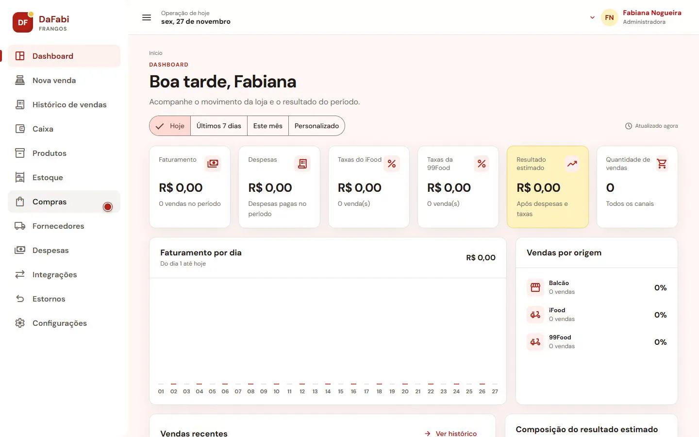
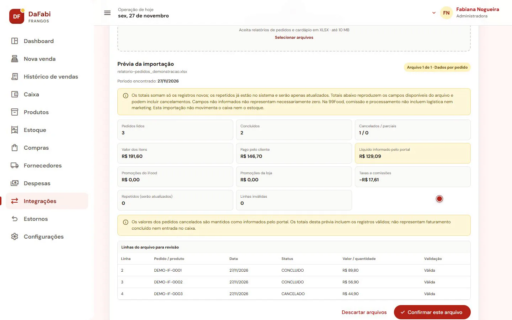

Professores e banca do Trabalho Interdisciplinar · branch fix/qa-25-11 (b05b67c) · 2026-11-27
Guia rápido
Uma sequência curta para começar. Consulte o manual para condições e exceções.
Suba o sistema
Banco e API em Codigo/back no perfil dev; front em Codigo/front com pnpm start. Abra http://localhost:4200.

Entre como Administradora
Toque no cartão Administradora. O painel aparece com o menu completo.

Cadastre e compre
Crie um produto, um fornecedor e uma compra de frango com lote e validade. Confira o lote em Estoque > Perecíveis.

Abra o caixa como operador
Entre como Operador de caixa, veja o menu restrito e abra o caixa com o saldo inicial.

Venda no PDV
Leia um código de barras, toque nos produtos frequentes e pague em dinheiro com troco.

Estorne e lance uma despesa
Como administradora, estorne uma venda com motivo e registre uma despesa. Marque-a como paga.

Importe o iFood
Em Integrações > iFood, envie um relatório, revise a prévia e confirme.

Feche o caixa e veja o painel
Feche o caixa com o valor contado e confira o Dashboard do dia.